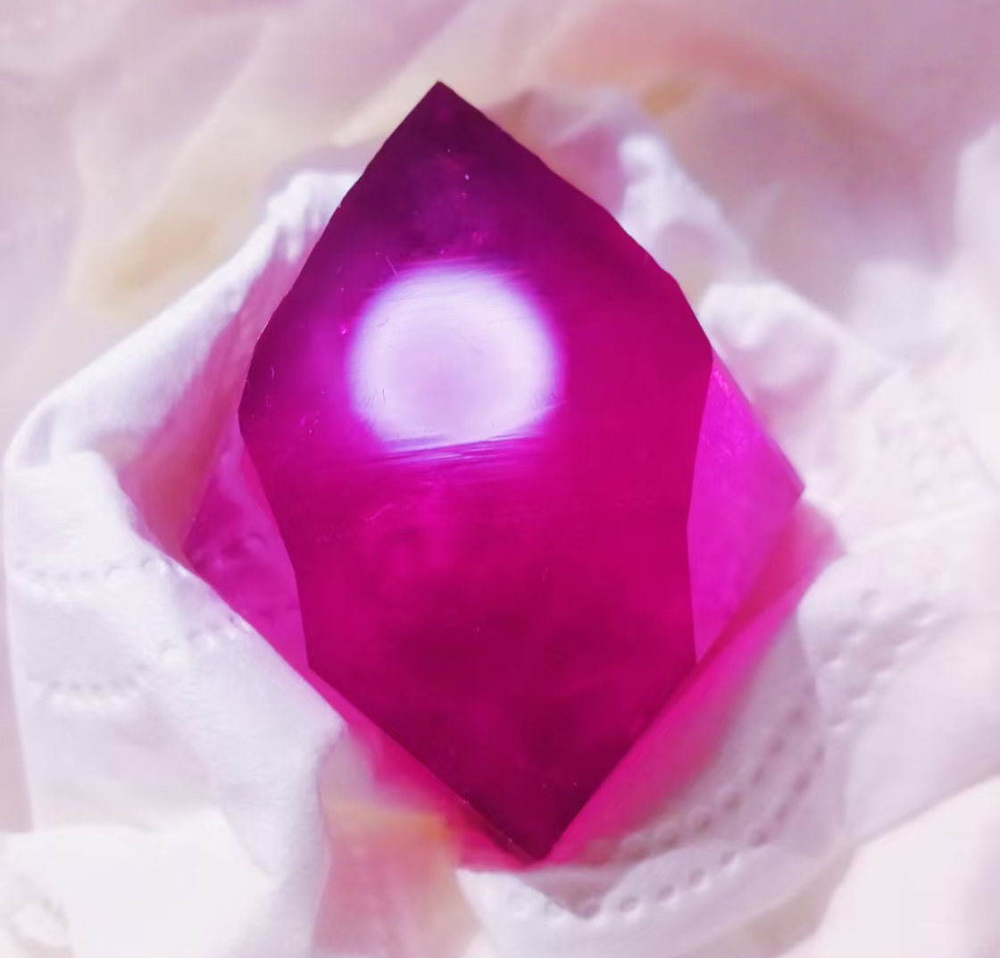

晶体化学指南
硫酸钕篇

图源：浅梦星河

图源：紫色硫酸铜
🎯 预览
项目概览：
- 难度等级：★★★☆☆ (中高级)
- 培养周期：3-6周
- 成功率：65%
- 推荐人群：有稀土化学基础者
所需材料：
- 氧化钕(Nd₂O₃)
- 硫酸(分析纯)
- 玻璃培养皿或烧杯
- 蒸馏水、过滤装置
- pH试纸或计
一、基础认识
1.1 化学特性
化学式：Nd₂(SO₄)₃·8H₂O
外观特征
淡粉色至淡紫色晶体，透明至半透明，具有玻璃光泽
溶解特性
溶解度随温度升高而减小，20℃时约7.5g/100ml水
晶系
单斜晶系，常见板状或柱状晶体
1.2 稀土特性
钕离子特征
Nd³⁺离子在可见光区有特征吸收，呈现淡粉色
热稳定性
加热至400℃开始脱水，800℃完全分解为氧化钕
荧光特性
在紫外光下可能显示弱红色荧光
二、实验与制备
2.1 从氧化钕制备硫酸钕溶液
目标：制备约340ml硫酸钕饱和溶液（10℃条件）
反应原理
Nd₂O₃ + 3H₂SO₄ → Nd₂(SO₄)₃ + 3H₂O
理论产量：15g Nd₂O₃ → 32.1g Nd₂(SO₄)₃·8H₂O
理论产量：15g Nd₂O₃ → 32.1g Nd₂(SO₄)₃·8H₂O
八水合硫酸钕溶解度参考
| 温度 | 溶解度(g/100ml水) |
|---|---|
| 0℃ | 13.0 |
| 10℃ | 9.7 |
| 20℃ | 7.1 |
| 30℃ | 5.3 |
| 40℃ | 4.1 |
| 90℃ | 1.2 |
※ 硫酸钕具有逆向溶解度特性：温度升高，溶解度降低
步骤一：初始悬浮液制备
- 向500ml锥形瓶中加入50ml蒸馏水
- 加入15g氧化钕粉末，充分搅拌形成均匀悬浮液
- 关键：搅拌必须充分，防止后续加酸时氧化钕结块
步骤二：硫酸添加
- 量取38.5g（约25.7ml）60%硫酸
- 在持续搅拌下，将硫酸缓慢加入氧化钕悬浮液中
- 注意反应放热，控制添加速度防止剧烈反应
步骤三：稀释与煮沸溶解
- 向锥形瓶中加入约264ml水，使总体积达到约340ml
- 配比说明：考虑市售氧化钕可能存在反应惰性或部分变质（如碱式碳酸钕），实际配制的溶液体积比理论饱和溶液（10℃时353ml）略少
- 将锥形瓶置于加热装置上，长时间煮沸
- 煮沸过程中，溶液会析出硫酸钕水合物晶体，这属正常现象
- 持续煮沸直至锥形瓶底的氧化钕几乎完全溶解消失
步骤四：冷却与调整
- 将煮沸后的溶液冷却至室温
- 补充蒸馏水至340ml，弥补煮沸过程中蒸发的水分
- 化学计量：此配比下，溶解完全后溶液中仍剩余约5%的过量硫酸
步骤五：低温溶解与过滤
- 将溶液置于低于10℃的环境中长时间放置
- 等待硫酸钕完全溶解（利用逆向溶解度特性）
- 用0.45μm滤膜过滤溶液，确保无悬浮颗粒
- 此时得到澄清的硫酸钕饱和溶液，可直接用于晶体培养
技术要点：
- 初始搅拌充分是防止结块的关键
- 煮沸时间需足够长确保氧化钕完全溶解
- 利用硫酸钕的逆向溶解度特性：温度越低，溶解度越高
- 过量硫酸（5%）有助于防止钕离子水解，保持溶液稳定
2.2 常温蒸发结晶法
💡 核心方法：利用逆向溶解度特性
材料：硫酸钕溶液、培养皿、防尘罩、温度计
溶液配制
制备接近饱和的硫酸钕溶液，室温下静置过夜
过滤除杂
用0.45μm滤膜过滤溶液，确保无悬浮颗粒
蒸发控制
室温(20-25℃)下自然蒸发，覆盖多孔防尘罩
硫酸钕溶解度随温度升高而降低，因此不宜加热蒸发
晶体生长
静置3-6周，定期观察晶体生长情况
收集处理
用塑料镊子取出晶体，滤纸吸干，室温干燥
2.3 溶解度控制技巧
温度控制
保持恒定室温，避免温度波动超过±2℃
蒸发速率
通过调整防尘罩孔隙控制蒸发速率，建议每周蒸发5-8%体积
防尘措施
使用多层纱布或专用防尘膜，防止灰尘落入
三、安全与注意事项
3.1 化学品安全
- 硫酸具有强腐蚀性，操作时需佩戴防护眼镜、手套和实验服
- 氧化钕粉末可能刺激呼吸道，需在通风橱或通风良好处操作
- 稀土化合物应避免长期接触皮肤，操作后彻底洗手
3.2 废液处理
稀土回收
含钕废液应专门收集，可回收利用或交由专业机构处理
中和处理
酸性废液需用碳酸钠或石灰中和至中性后再排放
环保要求
遵守当地环保法规，不得随意倾倒重金属废液
四、成果展示与质量评估
优质晶体特征
优质硫酸钕晶体：
- 颜色均匀，呈淡粉色至淡紫色
- 透明度高，内部洁净无包裹体
- 晶形完整，板状或柱状形态清晰
- 表面光滑，玻璃光泽明显
问题晶体：
- 颜色发白 - 水解或杂质污染
- 晶体细小 - 蒸发过快或成核过多
- 表面粗糙 - 灰尘污染或生长过快
- 透明度差 - 溶液纯度不足
五、问题诊断与解决
常见问题排查
问题一：溶液浑浊或沉淀
- 可能原因：pH不当导致水解，或杂质未除净
- 解决方案：调节pH至2-3，重新过滤或离心纯化
问题二：晶体生长缓慢
- 可能原因：蒸发过慢，温度过低，或溶液未饱和
- 解决方案：增加通风，保持室温20℃以上，确认溶液饱和度
问题三：晶体颜色异常
- 可能原因：杂质污染，或氧化钕原料不纯
- 解决方案：使用高纯试剂，增加纯化步骤，避免金属污染
问题四：多晶聚合
- 可能原因：震动干扰，或成核点过多
- 解决方案：确保环境稳定，使用晶种引导单晶生长
六、科学原理
6.1 逆向溶解度现象
热力学原理
溶解过程焓变ΔH为正值，吸热反应，温度升高不利于溶解
结晶策略
利用常温蒸发而非降温结晶，符合其溶解度特性
稀土水合
Nd³⁺离子水合作用强，八水合物在常温下稳定存在
6.2 颜色成因
f-f电子跃迁
Nd³⁺的4f³电子组态在可见光区有特征吸收带
晶体场效应
硫酸根配体场影响能级分裂，决定具体颜色
水合影响
结晶水数量影响晶体场强度，从而改变颜色深浅
七、保存与展示
7.1 长期保存方法
防潮处理
硫酸钕晶体易风化，需密封保存于干燥器中
避光保存
长时间光照可能引起颜色变化，建议避光存放
展示建议
可置于透明密封盒中，添加干燥剂，标注晶体信息
八、应用领域
8.1 稀土功能材料
激光材料
Nd³⁺是重要的激光激活离子，用于固体激光器
荧光材料
掺钕材料在显示、照明领域有应用
催化领域
钕化合物在某些有机合成中作为催化剂
科研教育
稀土晶体培养是晶体化学教学的重要内容